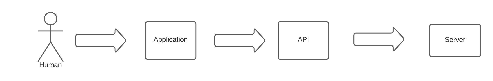
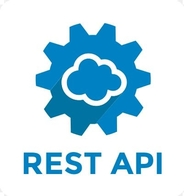
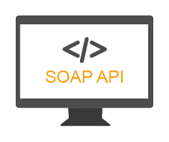

What are API's 18th Feb 2021
In this blog we will learn what are API's in general term
API's- What are these afterall..
Embed from Getty Images
API stands for Application Programming Interface. Talking
in technical terms, an API is a set of procedures,a computing
interface , other points of access which an application, a
library,third party software etc., makes available to programmers
in order to allow it to interact with other software. If you
didn’t get it, don't worry, neither did I initially 😊 .
Let’s explore what are API's in order to understand them better.

Egample scenario
Consider a hyptothetical scenario to understand better. Say Alex,
goes to a book store. Assume he likes books written by a
particular author.There are tons of book in the book store. Now
imagine the amount of time and energy Alex would have to waste in
searching the book in all the aisles of the bookstore.Now, here
comes the bookstore employee, Diana. Diana can assist Alex. If he
goes and asks Diana , she can help him find the book.
1).
Diana is the API for the Bookstores
2).
Bookstore can be a 3rd party app, or any other application which has the assets/data.This is the source of data for the API
3).
Alex is the software developer/end user or a 3rd party application which wants to use or say consume Bookstore's data
4).
So Diana is like an intermediatory layer between Alex and the Bookstore.Any user can ask book of their choice and Diana can repond to the request accordingly.API is the same, it's an interface to any underlying asset.
5).
Ofcourse you can put security etc to the API's so that not any random user can access data. Just like in our analogy Diana can ask Alex to prove his identity using Drivers License etc.
Basically, API takes your requests and retrieve the response from
the server. It’s the stuff that lets your products and services
communicate or interact with other products and services without
having to constantly build new connectivity infrastructure.If you
are into computer science or IT industry, there is no escape from
APIs.We all are connected through APIs. Nearly all businesses that
use any kind of modern technology use APIs at some level to
retrieve data or interact with a database for customers to use.
Whenever you use an app on your phone or computer ,say
you log onto Twitter or Facebook, you’re interacting with several
different APIs behind the scenes.Or, say you’re planning to watch
a movie in a theatre over the weekend, and logonto your favorite
app to book the same. Then you type the "movie name", "dates",
"number of seats" etc to check availability and click on "search"
button.Then you see the movies nicely displayed on the UI with
timings and other details.Behind the scenes, in all probability,
there is some API sitting behind and retrieving the details for
you based on the search details you entered.
How do APIs work?
So we already learnt above that an API- Application Programming
Interface is a set of rules that define how computers,
applications, or machines can talk to each other. You can think of
it this way: the typical user interface is intended for use by a
human being, while APIs are intended for use by an application or
a computer or another software

Most web APIs sit between the application and the web server. The
human initiates an API call that tells the application to do
something, then the application in turn will use an API to ask the
web server to do something. The response returned by the web
server is returned to the application which normally puts the
details in a user friendly way i.e shown nicely on the front end
so that the end user can read/understand
Most Common Types of API

-
1 REST APIs) - Stands for Representational State
Transfer.

It is an architectural style. The REST architecture generally consists of clients, servers, resources, and a vocabulary of HTTP operations known as request methods. REST relies on principles that are ultimately simpler to follow than a prescribed protocol. Most of the API's specially Public API's use REST standard these days specifically because of its fast performance, reliability, and ability to scale by reusing modular components without affecting the system as a whole.
From developer point of view, REST is a set of rules that they need to follow when they create their API.
One of the rules states that you should be able to get a piece of data (called a resource) when you link to a specific URL.Each URL is called a request while the data sent back to you is called a response.
The payload - the data to be delivered (i.e the response) - will be formatted in a language such as JSON, or XML.
The set of operations are the methods available to HTTP, which is the underlying protocol for how browsers retrieve websites from servers. These methods include GET, POST, PUT, DELETE, and others.
And thats why it's easier for developer because even if they don't know specifics of REST, they are likely to know how to work with RESTful APIs thanks to the underlying foundation upon which they are built: HTTP.
The Anatomy Of A REST API Request
A).
URI (uniform resource identifier), which is the URL address, also known as an “endpoint”).The endpoint (or route) is the url you request for. It follows this structure: https://blog.postman.com/rest-api-examples/ https://cat-fact.herokuapp.com/facts/. The root-endpoint is the starting point of the API you’re requesting from. The root-endpoint of Github’s API is https://api.github.com while the root-endpoint Twitter’s API is https://api.twitter.com.
B).
The method i.e HTTP Verbs like GET - for retrieving the details, POST-for insertion, PUT -for updating, DELETE - for deletion
C).
Headers- like authentication tokens,data format of request (mainly when you do a PUT/POST) (eg application/json)
D).
Body which is the data
-
2 SOAP APIs) stands for “Simple Object Access Protocol,”

This is more complex than REST because it requires more information upfront about security and how to sends messages. SOAP, unlike the REST pattern, supports the XML data format only and strongly follows preset standards such as messaging structure, a set of encoding rules, and a convention for providing procedure requests and responses and therefore to lack the lightweight portability and flexibility of REST.SOAP was developed to help standardize message formats and requests.SOAP API's are still used specially it can assist in certain scenarios better. For instance, if you need more robust security, SOAP’s support for WS-Security can come in handy. SOAP can be extended with WS standard protocols. Another advantage of SOAP is that it offers built-in retry logic to compensate for failed communications. REST, on the other hand, doesn’t have a built-in messaging system. If a communication fails, the client has to deal with it by retrying. There’s also no standard set of rules for REST. SOAP is highly extensible through other protocols and technologies. In addition to WS-Security, SOAP supports WS-Addressing, WS-Coordination, WS-ReliableMessaging, and a lot of other web services standards. You can find full list on W3C
Conclusion.
To conclude,I hope you understand what are API's, it's usage and
types of API.Do refer my blog to understand API-schema. Link
belowLink below
What is API-Schema
And that's it. Hope you undertood how to customize JSON server. .Email me at "techspacedeck@gmail.com" incase you have queries. Alternatively, you can fill the "CONTACT" form or drop a comment below